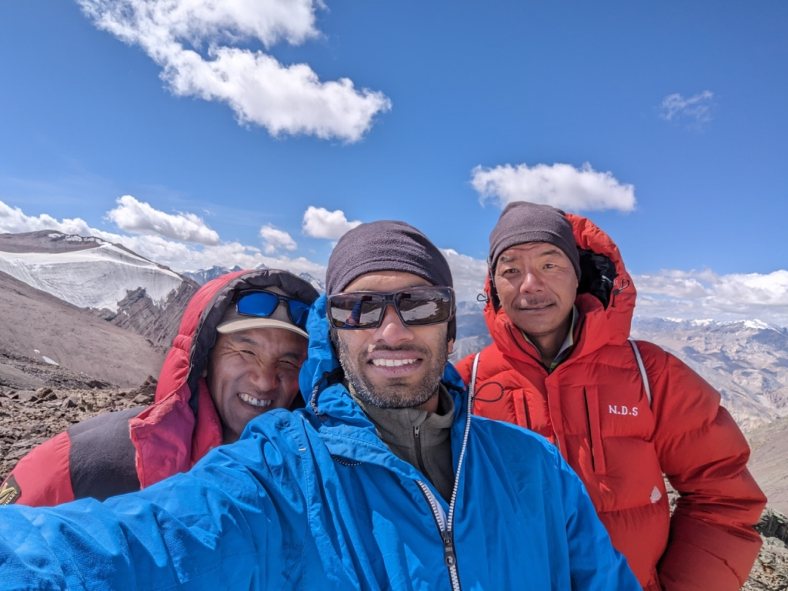
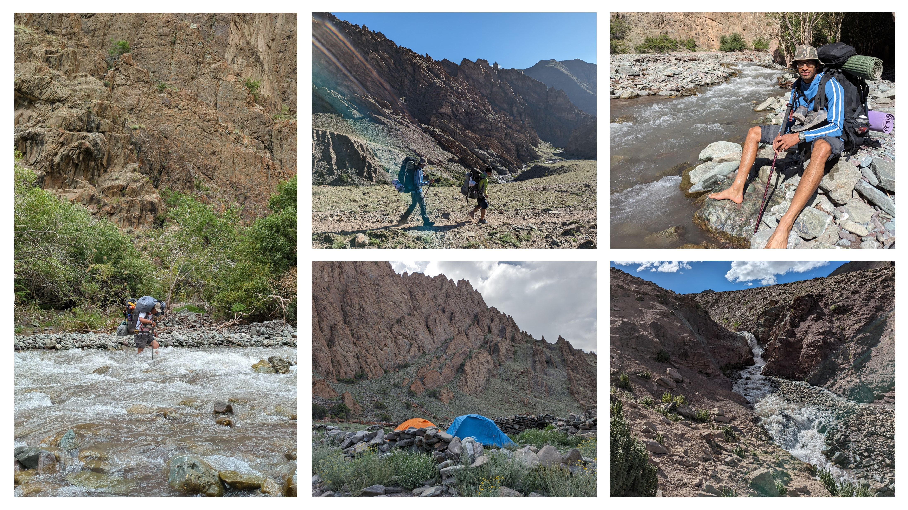
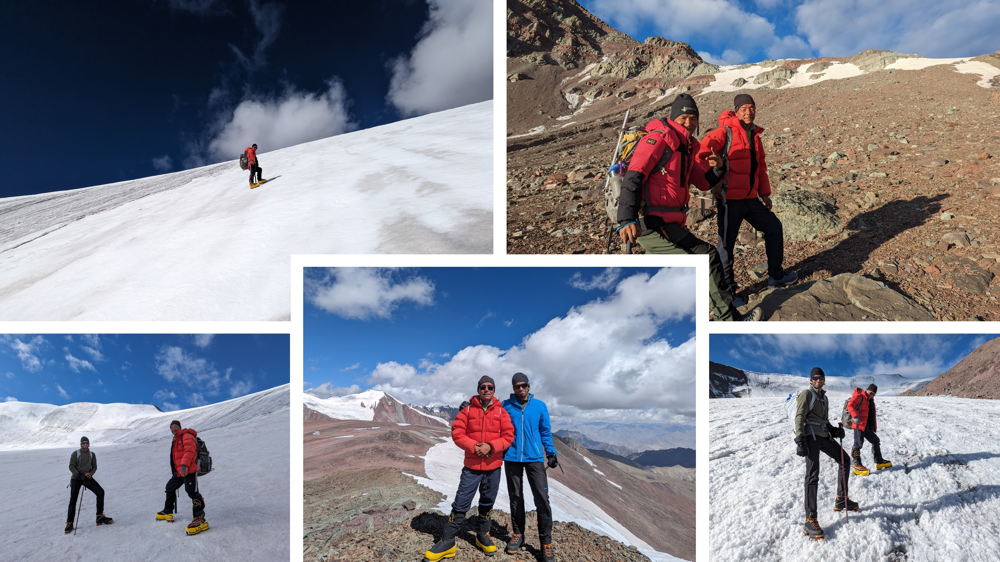
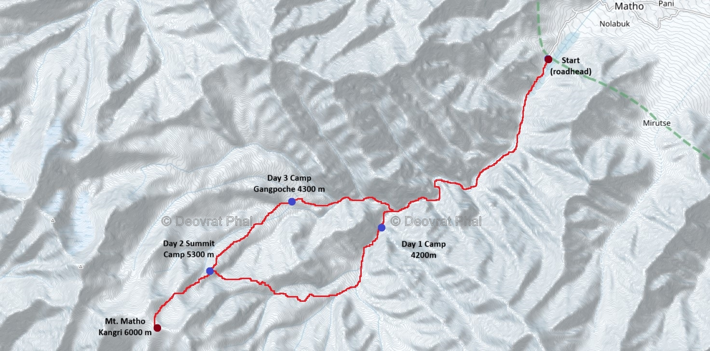

August 16th – 19th 2023, the two best himalayan mountaineers and sherpa from Darjeeling, Nim Dorjee Sherpa and Nawang Sir, helped chalk-out a private self-supported expedition for me to Mt. Matho Kangri, a 6000 m remote rocky mountain in the Zaskar ranges near Leh, India. Although, a 6000-meter peak like Matho Kangri requires around 15 days of acclimatization for a safe and comfortable climb, we planned our 3-member expedition for 4 days. That said, we made sure to carry extra supplies just in case we needed a few more days on the mountain. No porters or mules or any outside support was used. The expedition was executed in Alpine style.

Equipment list: Personal equipment (harness, ice-axe, crampons, boots, carabiners, slings), 60 m rope, sets of pittons and anchors, 2 tents, sleeping bags and mats, cooking items, a kerosene stove, fuel, and necessary supporting accessories and clothing gear. No Jumars were used. Each of the guides impressively carried a load of 30 kg, while my own backpack weighed 22 kg.

Day 1 — 11 km — 750 m elevation gain — Camp at 4200 m
On the first day, our trek began from Matho village, heading towards Shepherd's Camp. This initial trek was 11 kilometers long and involved a steady climb of 750 meters in elevation, ending at a height of 4200 meters. We encountered around 11 stream and river crossings, each becoming progressively more challenging as the day warmed and melting snow rapidly increased the water levels. Initially, we had planned to reach Gangpoche camp, the original base camp, but we lost our way during the river crossings and decided to set camp in a different valley instead. See the map attached.
Day 2 — 7 km — 1100 m elevation gain — Camp at 5300 m
The second day involved a demanding yet rewarding 7-kilometer climb gaining 1100 meters of elevation gain to reach the high camp at 5300 meters. The landscape was breathtakingly beautiful but required patience and careful pacing due to the altitude. Having started the day at 9 AM, we reached 5300 m camp (just a small piece of slope where we put our tents) at 17.00.
Day 3 — 5 km — 700 m elevation gain — 6000 m Summit — Camp at 4300 m
On the third day, we started our summit attempt at 5:44 AM. We climbed steadily, covering 700 meters in elevation over 5 kilometers. After about five hours of effort, we reached the summit and felt an immense sense of joy and accomplishment. Following our successful summit, we descended back to Gangpoche base camp, grateful and humbled by the experience. Spotted a herd of Blue sheep on our descend.
Day 4 — 12 km — Matho village and back to Leh
The fourth and final day saw us making our way back to Matho village, a 12-kilometer trek returning us safely to the roadhead. Same 11 water stream crossings, but now we were used to the drill 😉
Back in Leh, we celebrated our journey and cherished the memories made during those incredible days on the mountain. Its a blessing when the gods themselves plan your expedition. Nim Dorjee Sir is the only Indian mountaineer and sherpa to have climbed Mt. Everest more than 17 times and is actively involved in route-opening and rescue operations on Everest. Nawang Sir works actively to make himalayas more safe, sustainable and approachable.
Nim Dorjee Sherpa, Nawang Sherpa, Deovrat Phal
